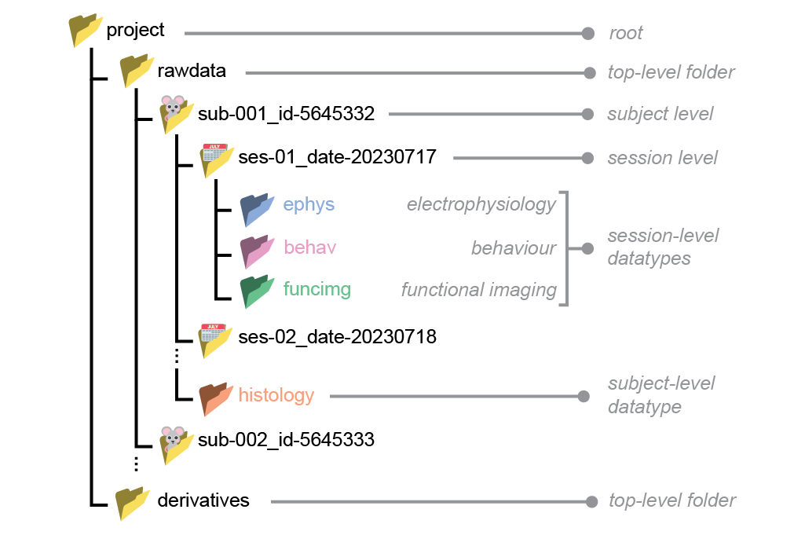
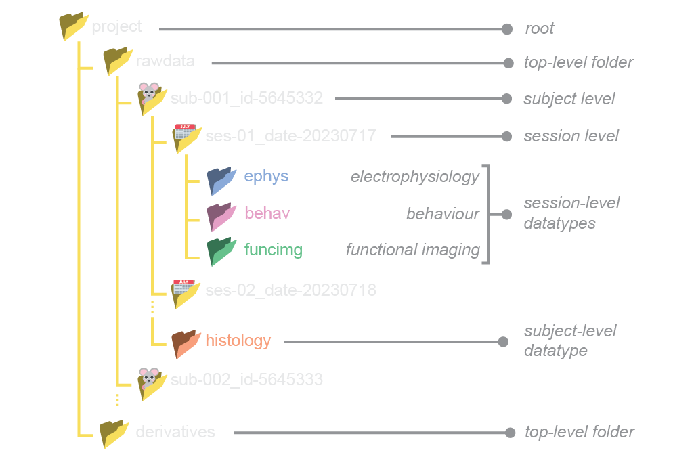

The specification#
The current version of NeuroBlueprint mainly aims to enforce a uniform and consistent project folder structure. In addition, it also includes some non-mandatory conventions for naming files and storing tabular metadata.
Note
We mark requirements with italicised keywords that should be interpreted as described by the Network Working Group. In decreasing order of requirement, these are: must , should , and may .
Project folder structure#
Standardised project folders contain data that are hierarchically structured according to the BIDS standard.
For example:
 Basic principles#
The project folder may have any name descriptive of the project, but it must be without spaces.
Within the project folder, data must be separated into
rawdataandderivatives.rawdata: coming out of the data acquisition system (e.g. binary files, tiffs, videos files).derivatives: any processed data that is derived fromrawdata(e.g. spike sorting or pose estimation).
Data within the
rawdatafolder must be hierarchically structured into subject/session/datatype levels. Each level must contain at least one folder corresponding to the next (lower) level.Subject and session folder names must consist of key-value pairs separated by underscores, without spaces e.g.
sub-001_id-5645332.Datatype folder names must be one of the following :
ephys,behav,funcimg,anat.Datatype folders must be placed under the session level.
Below we describe each level of the rawdata folder hierarchy in more detail. Though we impose no absolute requirements for the folder structure within derivatives, it should match the hierarchy in rawdata whenever possible.
Subject#
Each subject must have exactly one subject-level folder.
Subject-level folders must be prefixed with a key-value pair that is unique for each subject. The key must be
suband the value must be numerical, e.g.sub-001.Subjects should be assigned ascending numerical labels as they are added to the project. The labels should be prefixed with an arbitrary number of 0s for consistent indentation and sorting, e.g.
sub-001,sub-002,sub-003.Additional key-value pairs with alphanumerical labels may be appended after the
subkey-value pair. For example, animal IDs (e.g. from the animal facility) can be added as follows:sub-001_id-5645332. The keys should be consistent across subjects.
Hint
valid:
sub-02,sub-001_id-5645332_sex-F,sub-02_species-mouseinvalid:
mouse-01: the first key should have beensub.sub-001_female:femaleshould have been written as a key-value pair (e.g.sex-female)sub-B: thesubkey should have a numerical value
Session#
Each session must have exactly one session-level folder.
Session-level folders must be prefixed with a key-value pair that is unique for each session. The key must be
sesand the value must be numerical, e.g.ses-01.Sessions should be assigned ascending numerical labels as they are added to the project. The labels should be prefixed with an arbitrary number of 0s for consistent indentation and sorting, e.g.
ses-01,ses-02,ses-03.Additional key-value pairs with alphanumerical labels may be appended after the
seskey-value pair. For example, dates can be added as follows:ses-001_date-20230310. The keys should be consistent across subjects.If a
datefield is added, it should be in the formatYYYYMMDD.If a
timefield is added, it should be in the formatHHMMSSIf a
datetimefield is added, it should be in ISO8601 formatYYYYMMDDTHHMMSSe.g.20231225T133015.Different sessions may contain different combinations of datatypes.
Hint
valid:
ses-02,ses-2_date-20230204invalid:
date-20230204_ses-01:sesshould have been the first keysession2: should have been written asses-2ses-A: theseskey should have a numerical value
Datatype#
The following datatypes are supported:
ephys: electrophysiology (e.g. Neuropixel probes, tetrodes)behav: behavioural (e.g. video and audio files, response logs)funcimg: functional imaging (e.g. calcium and voltage imaging)anat: anatomical (e.g. histology, using confocal or lightsheet)
Example project folder#
A real project folder might look like:
└── project/
├── rawdata/
│ └── sub-001_id-5645332/
│ ├── ses-01_date-20230310/
│ │ ├── ephys/
│ │ │ ├── sub-001_ses-01_recording-01.bin
│ │ │ └── sub-001_ses-01_probe-3A.imec0
│ │ └── behav/
│ │ ├── sub-001_ses-01_camera-01.wav
│ │ └── sub-001_ses-01_data-responses.csv
│ └── ses-02_date-20230311/
│ └── anat/
│ └── sub-001_image-brain.tiff
└── derivatives/
└── sub-001_id-5645332/
├── ses-01_date-20230310/
│ ├── ephys/
│ │ └── sub-001_ses-01_data-spikes.npy
│ └── behav/
│ └── sub-001_ses-01_data-poses.csv
└── ses-02_date-20230311/
└── anat/
└── sub-001_data-cellcounts.csv
File naming conventions#
NeuroBlueprint imposes no absolute requirements on file names. That said, below we provide some recommendations for file names, based on the BIDS specification.
What makes a good file name?
be nice to humans -> readable and descriptive
be nice to computers -> parseable and consistent
use alphanumeric characters
Aa-Zz, 0-9, dashes-, underscores_avoid spaces and special characters
use appropriate extensions for each file type (e.g.
.csv,.avi,.tiff)don’t rely on capitalization to distinguish files (some operating systems are case-insensitive)
File names should be formatted as series of key-value pairs ending with a file extension:
<key1>-<value1>_<key2>-<value2>_<key3>-<value3>...<keyN>-<valueN>.<extension>
Key-value pairs should be separated by underscores while the keys and values are separated by hyphens (e.g.
sub-001_ses-001_key1-value1_key2-value2.csv).Anything after the left-most stop (
.) is considered as the file extension.subandsesshould be included in the filename. This can seem redundant, given that the file is already in asub-<label>/ses-<label>folder, but it makes it easier to identify the file if it is moved out of its original folder.Additional information, such as the task name, or run number, may be included as further key-value pairs, e.g.
sub-001_ses-001_task-escape_run-001.csvIf the acquisition software outputs data with its own mandatory file naming convention, these should be placed under a folder that follows the NeuroBlueprint naming conventions, e.g.:
└── my_project/
└── rawdata/
└── sub-001/
└── ses-001/
└── behav/
└── sub-001_ses-001_task-discrimination_software-cooltool/
├── required-software-output-name-3453234.mp4
└── required-software-output-name-3453235.mp4
Example file names#
Below we provide some example file names adhering to the NeuroBlueprint naming conventions.
└── project/
└── rawdata/
└── sub-001/
└── ses-01/
├── ephys/
│ ├── sub-01_ses-01_probe-3A.imec0
│ ├── sub-01_ses-01_task-retinotopy.lf.bin
│ ├── sub-01_ses-01_task-discrim_monitor-right_run-01.ap.bin
│ ├── sub-01_ses-01_task-discrim_monitor-left_run-01.ap.bin
│ └── sub-01_ses-01_task-discrim_monitor-left_run-02.ap.bin
└── behav/
├── sub-01_ses-01_task-discrim_monitor-right_run-01.mp4
├── sub-01_ses-01_task-discrim_monitor-left_run-01.mp4
└── sub-01_ses-01_task-discrim_monitor-right_run-02.mp4
Metadata conventions#
NeuroBlueprint imposes no absolute requirements on how to store metadata. That said, we do outline some best practices, in accordance with the BIDS specification on tabular files.
Tabular metadata#
Tabular metadata, e.g. a table describing the animals in the project, should be saved as a tab-separated value file (TSV, ending with .tsv) , that is, a CSV file where commas are replaced by tabs. The tab character is a less ambiguous delimiter compared to commas, as it is less likely to appear in data. This makes TSV less prone to parsing errors.
If you are using TSV files, we recommend adhering to the following conventions:
The first row of the file should contain descriptive column names, formatted as snake_case (e.g.
participant_id,species,date_of_birth,sex,group). Avoid blank (that is, an empty string) or duplicate columns names.Missing and non-applicable values should be coded as
n/a.Numerical values should employ the dot (.) as decimal separator and may be specified in scientific notation, using e or E to separate the significand from the exponent (e.g.
1.23e-4)TSV files should be in UTF-8 encoding.
Here is an example table containing metadata for animal subjects:
subject_id species sex group
sub-01 mus musculus M control
sub-02 mus musculus F control
sub-03 mus musculus M treatment